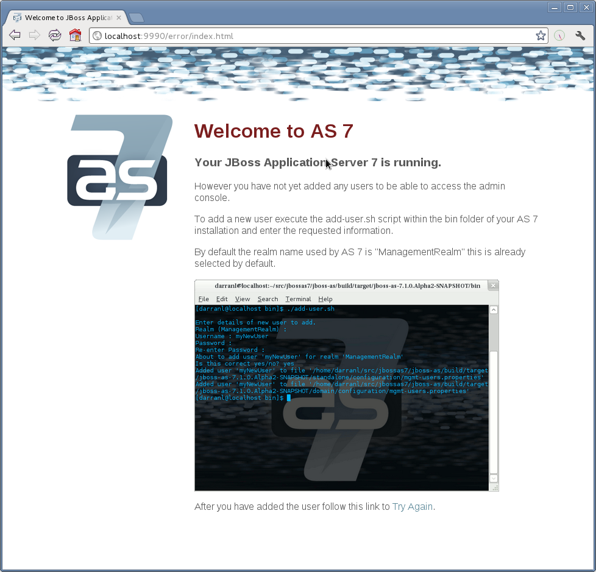

<management-interfaces> [...] <http-interface security-realm="ManagementRealm"> <socket-binding http="management-http"/> </http-interface> <management-interfaces>
WildFly 9 offers three different approaches to configure and manage servers: a web interface, a command line client and a set of XML configuration files. Regardless of the approach you choose, the configuration is always synchronized across the different views and finally persisted to the XML files.
Web Management Interface
The web interface is a GWT application that uses the HTTP management API to configure a management domain or standalone server.
HTTP Management Endpoint
The HTTP API endpoint is the entry point for management clients that rely on the HTTP protocol to integrate with the management layer. It uses a JSON encoded protocol and a de-typed, RPC style API to describe and execute management operations against a managed domain or standalone server. It's used by the web console, but offers integration capabilities for a wide range of other clients too.
The HTTP API endpoint is co-located with either the domain controller or a standalone server. By default, it runs on port 9990:
(See standalone/configuration/standalone.xml or domain/configuration/host.xml)
The HTTP API Endpoint serves two different contexts. One for executing management operations and another one that allows you to access the web interface:
-
Domain API: http://<host>:9990/management
-
Web Console: http://<host>:9990/console
Accessing the web console
The web console is served through the same port as the HTTP management API. It can be accessed by pointing your browser to:
-
http://<host>:9990/console
Default URL
By default the web interface can be accessed here: http://localhost:9990/console.
Default HTTP Management Interface Security
WildFly is distributed secured by default. The default security mechanism is username / password based making use of HTTP Digest for the authentication process.
The reason for securing the server by default is so that if the management interfaces are accidentally exposed on a public IP address authentication is required to connect - for this reason there is no default user in the distribution.
If you attempt to connect to the admin console before you have added a user to the server you will be presented with the following screen.

The user are stored in a properties file called mgmt-users.properties under standalone/configuration and domain/configuration depending on the running mode of the server, these files contain the users username along with a pre-prepared hash of the username along with the name of the realm and the users password.
Although the properties files do not contain the plain text passwords they should still be guarded as the pre-prepared hashes could be used to gain access to any server with the same realm if the same user has used the same password.
To manipulate the files and add users we provide a utility add-user.sh and add-user.bat to add the users and generate the hashes, to add a user you should execute the script and follow the guided process. 
The full details of the add-user utility are described later but for the purpose of accessing the management interface you need to enter the following values: -
-
Type of user - This will be a 'Management User' to selection option a.
-
Realm - This MUST match the realm name used in the configuration so unless you have changed the configuration to use a different realm name leave this set as 'ManagementRealm'.
-
Username - The username of the user you are adding.
-
Password - The users password.
Provided the validation passes you will then be asked to confirm you want to add the user and the properties files will be updated.
For the final question, as this is a user that is going to be accessing the admin console just answer 'n' - this option will be described later for adding slave host controllers that authenticate against a master domain controller but that is a later topic.
Updates to the properties file are picked up in real time so either click 'Try Again' on the error page that was displayed in the browser or navigate to the console again and you should then be prompted to enter the username and password to connect to the server.
Command Line Interface
The Command Line Interface (CLI) is a management tool for a managed domain or standalone server. It allows a user to connect to the domain controller or a standalone server and execute management operations available through the de-typed management model.
Native Management Endpoint
The native API endpoint is the entry point for management clients that rely on the AS's native protocol to integrate with the management layer. It uses an open binary protocol and an RPC style API based on a very small number of Java types to describe and execute management operations against a managed domain or standalone server. It's used by the CLI management tool, but offers integration capabilities for a wide range of other clients too.
The native API endpoint is co-located with either the a host controller or a standalone server. To use the CLI it must be enabled. By default, it runs on port 9999:
<management-interfaces> <native-interface security-realm="ManagementRealm"> <socket-binding native="management-native"/> </native-interface> </native-interf [...] <management-interfaces>
(See standalone/configuration/standalone.xml or domain/configuration/host.xml)
Running the CLI
Depending on the operating system, the CLI is launched using jboss-cli.sh or jboss-cli.bat located in the WildFly 8 bin directory. For further information on the default directory structure, please consult the "Getting Started Guide".
The first thing to do after the CLI has started is to connect to a managed WildFly 8 instance. This is done using the command connect, e.g.
./bin/jboss-cli.sh You are disconnected at the moment. Type 'connect' to connect to the server or 'help' for the list of supported commands. [disconnected /] [disconnected /] connect [domain@localhost:9999 /] [domain@localhost:9999 /] quit Closed connection to localhost:9999
localhost:9999 is the default host and port combination for the WildFly 9 domain controller client.
The host and the port of the server can be provided as an optional parameter, if the server is not listening on localhost:9999.
./bin/jboss-cli.sh You are disconnected at the moment. Type 'connect' to connect to the server [disconnected /] connect 192.168.0.10:9999 Connected to standalone controller at 192.168.0.1:9999
The :9999 is not required as the CLI will use port 9999 by default. The port needs to be provided if the server is listening on some other port.
To terminate the session type quit.
The jboss-cli script accepts a --connect parameter: ./jboss-cli.sh --connect
The --controller parameter can be used to specify the host and port of the server: ./jboss-cli.sh --connect --controller=192.168.0.1:9999
Help is also available:
[domain@localhost:9999 /] help Supported commands: cn (or cd) - change the current node path to the argument; connect - connect to the specified host and port; deploy - deploy an application; help (or h) - print this message; history - print or disable/enable/clear the history expansion. ls - list the contents of the node path; pwn (or pwd) - prints the current working node; quit (or q) - quit the command line interface; undeploy - undeploy an application; version - prints the version and environment information. add-jms-queue - creates a new JMS queue remove-jms-queue - removes an existing JMS queue add-jms-topic - creates a new JMS topic remove-jms-topic - removes an existing JMS topic add-jms-cf - creates a new JMS connection factory remove-jms-cf - removes an existing JMS connection factory data-source - allows to add new, modify and remove existing data sources xa-data-source - allows to add new, modify and remove existing XA data sources For a more detailed description of a specific command, execute the command with '--help' as the argument.
interactive Mode
The CLI can also be run in non-interactive mode to support scripts and other types of command line or batch processing. The --command and --commands arguments can be used to pass a command or a list of commands to execute. Additionally a --file argument is supported which enables CLI commands to be provided from a text file.
For example the following command can be used to list all the current deployments
$ ./bin/jboss-cli.sh --connect --commands=ls\ deployment sample.war osgi-bundle.jar
The output can be combined with other shell commands for further processing, for example to find out what .war files are deployed:
$ ./bin/jboss-cli.sh --connect --commands=ls\ deployment | grep war sample.war
Operation Requests
Operation requests allow for low level interaction with the management model. They are different from the high level commands (i.e. create-jms-queue) in that they allow you to read and modify the server configuration as if you were editing the XML configuration files directly. The configuration is represented as a tree of addressable resources, where each node in the tree (aka resource) offers a set of operations to execute.
An operation request basically consists of three parts: The address, an operation name and an optional set of parameters.
The formal specification for an operation request is:
[/node-type=node-name (/node-type=node-name)*] : operation-name [( [parameter-name=parameter-value (,parameter-name=parameter-value)*] )]
For example:
/profile=production/subsystem=threads/bounded-queue-thread-pool=pool1:write-core-threads (count=0, per-cpu=20)
Tab Completion
Tab-completion is supported for all commands and options, i.e. node-types and node-names, operation names and parameter names. We are also considering adding aliases that are less verbose for the user, and will translate into the corresponding operation requests in the background.
Whitespaces between the separators in the operation request strings are not significant.
Addressing resources
Operation requests might not always have the address part or the parameters. E.g.
:read-resource
which will list all the node types for the current node.
To syntactically disambiguate between the commands and operations, operations require one of the following prefixes:
To execute an operation against the current node, e.g.
cd subsystem=web :read-resource(recursive="true")
To execute an operation against a child node of the current node, e.g.
cd subsystem=web ./connector=http:read-resource
To execute an operation against the root node, e.g.
/subsystem=threads:read-resource
Available Operation Types and Descriptions
The operation types can be distinguished between common operations that exist on any node and specific operations that belong to a particular configuration resource (i.e. subsystem). The common operations are:
-
add
-
read-attribute
-
read-children-names
-
read-children-resources
-
read-children-types
-
read-operation-description
-
read-operation-names
-
read-resource
-
read-resource-description
-
remove
-
validate-address
-
write-attribute
For a list of specific operations (e.g. operations that relate to the logging subsystem) you can always query the model itself. For example, to read the operations supported by the logging subsystem resource on a standalone server:
[[standalone@localhost:9999 /] /subsystem=logging:read-operation-names
{
"outcome" => "success",
"result" => [
"add",
"change-root-log-level",
"read-attribute",
"read-children-names",
"read-children-resources",
"read-children-types",
"read-operation-description",
"read-operation-names",
"read-resource",
"read-resource-description",
"remove-root-logger",
"root-logger-assign-handler",
"root-logger-unassign-handler",
"set-root-logger",
"validate-address",
"write-attribute"
]
}
As you can see, the logging resource offers four additional operations, namely root-logger-assign-handler, root-logger-unassign-handler , set-root-logger and remove-root-logger.
Further documentation about a resource or operation can be retrieved through the description:
[standalone@localhost:9999 /] /subsystem=logging:read-operation-description(name=change-root-log-level)
{
"outcome" => "success",
"result" => {
"operation-name" => "change-root-log-level",
"description" => "Change the root logger level.",
"request-properties" => {"level" => {
"type" => STRING,
"description" => "The log level specifying which message levels will be logged by this logger.
Message levels lower than this value will be discarded.",
"required" => true
}}
}
}
Full model
To see the full model enter :read-resource(recursive=true).
Command History
Command (and operation request) history is enabled by default. The history is kept both in-memory and in a file on the disk, i.e. it is preserved between the command line sessions. The history file name is .jboss-cli-history and is automatically created in the user's home directory. When the command line interface is launched this file is read and the in-memory history is initialized with its content.
While in the command line session, you can use the arrow keys to go back and forth in the history of commands and operations.
To manipulate the history you can use history command. If executed without any arguments, it will print all the recorded commands and operations (up to the configured maximum, which defaults to 500) from the in-memory history.
history supports three optional arguments:
-
disable - will disable history expansion (but will not clear the previously recorded history);
-
enabled - will re-enable history expansion (starting from the last recorded command before the history expansion was disabled);
-
clear - will clear the in-memory history (but not the file one).
Batch Processing
The batch mode allows one to group commands and operations and execute them together as an atomic unit. If at least one of the commands or operations fails, all the other successfully executed commands and operations in the batch are rolled back.
Not all of the commands are allowed in the batch. For example, commands like cd, ls, help, etc. are not allowed in the batch since they don't translate into operation requests. Only the commands that translate into operation requests are allowed in the batch. The batch, actually, is executed as a composite operation request.
The batch mode is entered by executing command batch.
[standalone@localhost:9999 /] batch [standalone@localhost:9999 / #] /subsystem=datasources/data-source="java\:\/H2DS":enable [standalone@localhost:9999 / #] /subsystem=messaging/jms-queue="newQueue":add
You can execute a batch using the run-batch command:
[standalone@localhost:9999 / #] run-batch The batch executed successfully.
Exit the batch edit mode without losing your changes:
[standalone@localhost:9999 / #] holdback-batch [standalone@localhost:9999 /]
Then activate it later on again:
[standalone@localhost:9999 /] batch Re-activated batch #1 /subsystem=datasources/data-source=java:/H2DS:\/H2DS:enable
There are several other notable batch commands available as well (tab complete to see the list):
-
clear-batch
-
edit-batch-line (e.g. edit-batch line 3 create-jms-topic name=mytopic)
-
remove-batch-line (e.g. remove-batch-line 3)
-
move-batch-line (e.g. move-batch-line 3 1)
-
discard-batch
Default Native Management Interface Security
The native interface shares the same security configuration as the http interface, however we also support a local authentication mechanism which means that the CLI can authenticate against the local WildFly instance without prompting the user for a username and password. This mechanism only works if the user running the CLI has read access to the standalone/tmp/auth folder or domain/tmp/auth folder under the respective WildFly installation - if the local mechanism fails then the CLI will fallback to prompting for a username and password for a user configured as in Default HTTP Interface Security.
Establishing a CLI connection to a remote server will require a username and password by default.
Configuration Files
The XML configuration for a management domain and a standalone server can be found in the configuration subdirectory:
-
domain/configuration/domain.xml
-
domain/configuration/host.xml
-
standalone/configuration/standalone.xml
A managed domain actually ships with two different configuration types: One for the domain as a whole (domain.xml) and and another for each host that joins the domain (host.xml). A detailed explanation how to setup a domain topology can be found in the chapter "Domain Setup".
The XML configuration files act as a central, authoritative source of configuration. Any configuration changes made via the web interface or the CLI are persisted back to the XML configuration files. If a domain or standalone server is offline, the XML configuration files can be hand edited as well, and any changes will be picked up when the domain or standalone server is next started. However, users are encouraged to use the web interface or the CLI in preference to making offline edits to the configuration files. External changes made to the configuration files while processes are running will not be detected, and may be overwritten.